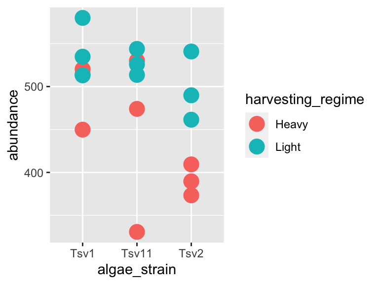
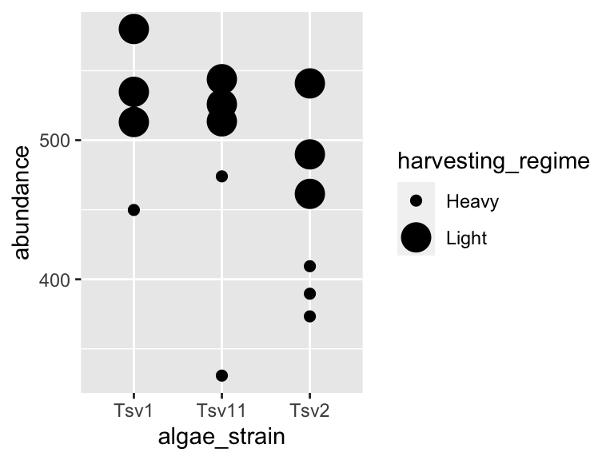
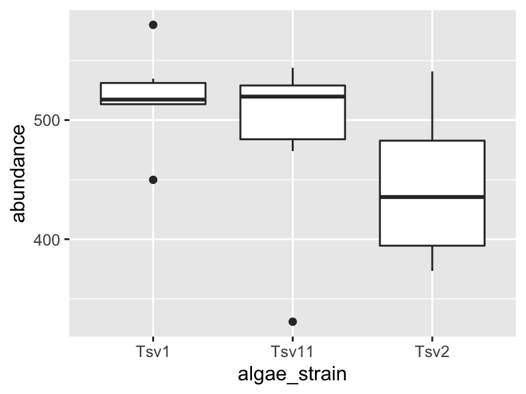

2 ggplot and markdown
2.1 Objects
Ok, we’ve got the installation out of the way. Let’s get down to working with data and generating reports! In R, data is stored in objects. You can think of objects as if they were “files” inside an R session. phylochemistry provides a variety of objects for us to work with.
Let’s look at how to create an object. For this, we can use an arrow: <- . The arrow will take something and store it inside an object. For example:
new_object <- 1Now we’ve got a new object called new_object, and inside of it is the number 1. To look at what’s inside an object, we can simply type the name of the object into the console:
new_object
## [1] 1Easy! Let’s look at one of the objects that comes with our class code base. What are the dimensions of the “algae_data” data set?
algae_data
## # A tibble: 180 × 5
## replicate algae_strain harvesting_regime chemical_species abundance
## <dbl> <chr> <chr> <chr> <dbl>
## 1 1 Tsv1 Heavy FAs 520.
## 2 1 Tsv1 Heavy saturated_Fas 123.
## 3 1 Tsv1 Heavy omega_3_polyunsaturated_F… 186.
## 4 1 Tsv1 Heavy monounsaturated_Fas 28.4
## 5 1 Tsv1 Heavy polyunsaturated_Fas 369.
## 6 1 Tsv1 Heavy omega_6_polyunsaturated_F… 183.
## 7 1 Tsv1 Heavy lysine 84.1
## 8 1 Tsv1 Heavy methionine 24.1
## 9 1 Tsv1 Heavy essential_Aas 692.
## 10 1 Tsv1 Heavy non_essential_Aas 919.
## # … with 170 more rows2.2 Functions
Excellent - we’ve got data. Now we need to manipulate it. For this we need functions:
- A function is a command that tells R to perform an action!
- A function begins and ends with parentheses:
this_is_a_function() - The stuff inside the parentheses are the details of how you want the function to perform its action:
run_this_analysis(on_this_data)
Let’s illustrate this with an example. algae_data is a pretty big object. For our next chapter on visualization, it would be nice to have a smaller dataset object to work with. Let’s use another tidyverse command called filter to filter the algae_data object. We will need to tell the filter command what to filter out using “logical predicates” (things like equal to: ==, less than: <, greater than: >, greater-than-or-equal-to: <=, etc.). Let’s filter algae_data so that only rows where the chemical_species is equal to FAs (fatty acids) is preserved. This will look like chemical_species == "FAs". Here we go:
filter(algae_data, chemical_species == "FAs")
## # A tibble: 18 × 5
## replicate algae_strain harvesting_regime chemical_species abundance
## <dbl> <chr> <chr> <chr> <dbl>
## 1 1 Tsv1 Heavy FAs 520.
## 2 2 Tsv1 Heavy FAs 450.
## 3 3 Tsv1 Heavy FAs 514.
## 4 1 Tsv1 Light FAs 580.
## 5 2 Tsv1 Light FAs 535.
## 6 3 Tsv1 Light FAs 513.
## 7 1 Tsv2 Heavy FAs 373.
## 8 2 Tsv2 Heavy FAs 409.
## 9 3 Tsv2 Heavy FAs 390.
## 10 1 Tsv2 Light FAs 490.
## 11 2 Tsv2 Light FAs 541.
## 12 3 Tsv2 Light FAs 461.
## 13 1 Tsv11 Heavy FAs 474.
## 14 2 Tsv11 Heavy FAs 331.
## 15 3 Tsv11 Heavy FAs 530.
## 16 1 Tsv11 Light FAs 526.
## 17 2 Tsv11 Light FAs 514.
## 18 3 Tsv11 Light FAs 544.Cool! Now it’s just showing us the 18 rows where the chemical_species is fatty acids (FAs). Let’s write this new, smaller dataset into a new object. For that we use <-, remember?
algae_data_small <- filter(algae_data, chemical_species == "FAs")
algae_data_small
## # A tibble: 18 × 5
## replicate algae_strain harvesting_regime chemical_species abundance
## <dbl> <chr> <chr> <chr> <dbl>
## 1 1 Tsv1 Heavy FAs 520.
## 2 2 Tsv1 Heavy FAs 450.
## 3 3 Tsv1 Heavy FAs 514.
## 4 1 Tsv1 Light FAs 580.
## 5 2 Tsv1 Light FAs 535.
## 6 3 Tsv1 Light FAs 513.
## 7 1 Tsv2 Heavy FAs 373.
## 8 2 Tsv2 Heavy FAs 409.
## 9 3 Tsv2 Heavy FAs 390.
## 10 1 Tsv2 Light FAs 490.
## 11 2 Tsv2 Light FAs 541.
## 12 3 Tsv2 Light FAs 461.
## 13 1 Tsv11 Heavy FAs 474.
## 14 2 Tsv11 Heavy FAs 331.
## 15 3 Tsv11 Heavy FAs 530.
## 16 1 Tsv11 Light FAs 526.
## 17 2 Tsv11 Light FAs 514.
## 18 3 Tsv11 Light FAs 544.2.3 ggplot
Now we have a nice, small table that we can use to practice data visualization. For visualization, we’re going to use ggplot2 - a powerful set of commands for plot generation.
There are three steps to setting up a ggplot:
- Define the data you want to use.
We do this using the ggplot function’s data argument. When we run that line, it just shows a grey plot space. Why is this? It’s because all we’ve done is told ggplot that (i) we want to make a plot and (ii) what data should be used. We haven’t explained how to represent features of the data using ink.
ggplot(data = algae_data_small)
- Define how your variables map onto the axes.
This is called aesthetic mapping and is done with the aes() function. aes() should be placed inside the ggplot command. Now when we run it, we get our axes!
ggplot(data = algae_data_small, aes(x = algae_strain, y = abundance))
- Use geometric shapes to represent other variables in your data.
Map your variables onto the geometric features of the shapes. To define which shape should be used, use a geom_* command. Some options are, for example, geom_point(), geom_boxplot(), and geom_violin(). These functions should be added to your plot using the + sign. We can use a new line to keep the code from getting too wide, just make sure the + sign is at the end fo the top line. Let’s try it:
ggplot(data = algae_data_small, aes(x = algae_strain, y = abundance)) +
geom_point()
In the same way that we mapped variables in our dataset to the plot axes, we can map variables in the dataset to the geometric features of the shapes we are using to represent our data. For this, again, use aes() to map your variables onto the geometric features of the shapes:
ggplot(data = algae_data_small, aes(x = algae_strain, y = abundance)) +
geom_point(aes(color = harvesting_regime))
2.3.1 modifying geoms
In the last plot in the previous section, the points were a bit small, how could we fix that? We can modify the features of the shapes by adding additional arguments to the geom_*() functions. To change the size of the points created by the geom_point() function, this means that we need to add the size = argument. Here’s an example:
ggplot(data = algae_data_small, aes(x = algae_strain, y = abundance)) +
geom_point(aes(color = harvesting_regime), size = 5)
One powerful aspect of ggplot is the ability to quickly change mappings to see if alternative plots are more effective at bringing out the trends in the data. For example, we could modify the plot above by switching how harvesting_regime is mapped:
ggplot(data = algae_data_small, aes(x = algae_strain, y = abundance)) +
geom_point(aes(size = harvesting_regime), color = "black")
** Important note: Inside the aes() function, map aesthetics (the features of the geom’s shape) to a variable. Outside the aes() function, map aesthetics to constants. You can see this in the above two plots - in the first one, color is inside aes() and mapped to the variable called harvesting_regime, while size is outside the aes() call and is set to the constant 5. In the second plot, the situation is reversed, with size being inside the aes() function and mapped to the variable harvesting_regime, while color is outside the aes() call and is mapped to the constant “black”.
2.3.2 multiple geoms
We can also stack geoms on top of one another by using multiple + signs. We also don’t have to assign the same mappings to each geom.
ggplot(data = algae_data_small, aes(x = algae_strain, y = abundance)) +
geom_violin() +
geom_point(aes(color = harvesting_regime), size = 5)
As you can probably guess right now, there are lots of mappings that can be done, and lots of different ways to look at the same data!
ggplot(data = algae_data_small, aes(x = algae_strain, y = abundance)) +
geom_violin(aes(fill = algae_strain)) +
geom_point(aes(color = harvesting_regime, size = replicate))
ggplot(data = algae_data_small, aes(x = algae_strain, y = abundance)) +
geom_boxplot()
2.4 markdown
Now that we are able to filter our data and make plots, we are ready to make reports to show others the data processing and visualization that we are doing. For this, we will use R Markdown. You can open a new markdown document in RStudio by clicking: File -> New File -> R Markdown. You should get a template document that compiles when you press “knit”.
Customize this document by modifying the title, and add author: "your_name" to the header. Delete all the content below the header, then compile again. You should get a page that is blank except for the title and the author name.
You can think of your markdown document as a stand-alone R Session. This means you will need to load our class code base into each new markdown doument you create. You can do this by adding a “chunk” or R code. That looks like this:

You should notice a few things when you compile this document:
Headings: When you compile that code, the “# My first analysis” creates a header. You can create headers of various levels by increasing the number of hashtags you use in front of the header. For example, “## Part 1” will create a subheading, “### Part 1.1” will create a sub-subheading, and so on.
Plain text: Plain text in an R Markdown document creates a plan text entry in your compiled document. You can use this to explain your analyses and your figures, etc.
We can also run R chunks right in markdown and create figures. Dr. Busta will show you how to do this in class.
2.5 exercises
In this set of exercises we’re going to practice filtering and plotting data in R Markdown. We’re going to work with two datasets: (i) algae_data and (ii) alaska_lake_data. For these exercises, you will write your code and answers to all questions in an R Markdown report, compile it as a pdf, and submit it on Canvas. If you have any questions please let me know
Some pointers:
If your code goes off the page, don’t be afraid to wrap it across multiple lines, as shown in some of the examples.
Don’t be afraid to put the variable with the long elements / long text on the y-axis and the continuous variable on the x-axis.
2.5.1 Algae Chemistry Dataset
- Filtering 1
You will have algae_data stored in an object called algae_data as soon as you run source("http://thebustalab.github.io/phylochemistry/phylochemistry.R"). For this question, filter the data so that only entries are shown for which the chemical_species is “FAs” (remember that quotes are needed around FAs here!). What are the dimensions (i.e. number of rows and columns) of the resulting dataset?
- Filtering 2
Now filter the dataset so that only entries for the algae_strain “Tsv1” are shown. What are the dimensions of the resulting dataset?
- Filtering 3
Now filter the dataset so that only entries with an abundance greater than 250 are shown. Note that > can be used in the filter command instead of ==, and that numbers inside a filter command do not require quotes around them. What are the dimensions of the resulting dataset?
- Plotting
Make a ggplot that has algae_strain on the x axis and abundance on the y axis. Remember about aes(). Use points (geom_point()) to represent each compound. You don’t need to color the points.
Which algae strain has the most abundant compound out of all the compounds in the dataset?
- Plotting
Make a ggplot that has abundance on the x axis and chemical_species on the y axis. Use points to represent each compound. You don’t need to color the points.
Generally speaking, what are the two most abundant classes of chemical species in these algae strains? (FAs/Fas stand for fatty acids, AAs/Aas stand for amino acids.)
- Filtering and plotting
I am going to show you an example of how you can filter and plot at the same time. To do this, we nest the filter command inside ggplot’s data argument:
ggplot(
data = filter(algae_data, chemical_species == "essential_Aas"),
aes(x = algae_strain, y = abundance)) +
geom_point()
Using the above as a template, make a plot that shows just omega_3_polyunsaturated_Fas, with algae_strain on the x axis, and abundance on the y axis. Color the points so that they correspond to harvesting_regime. Remember that mapping a feature of a shape onto a variable must be done inside aes(). Change the plot so that all the points are size = 5. Remember that mapping features of a shape to a constant needs to be done outside aes(). Which harvesting regime leads to higher levels of omega_3_polyunsaturated_Fas?
- Filtering and plotting
Use a combination of filtering and plotting to show the abundance of the different chemical species in just the algae_strain called “Tsv1”. Use an x and y axis, as well as points to represent the measurements. Make point size correspond to the replicate, and color the points according to harvesting regime.
- Open-ended plotting
Make a plot that checks to see which chemical_species were more abundant under light as opposed to heavy harvesting_regime in all three replicates. Use filtered data so that just one algae_strain is shown, an x and a y axis, and points to represent the measurements. Make the points size = 5 and also set the point’s alpha = 0.6. The points should be colored according to harvesting_regime. Make 3 plots, one for each strain of algae.
- A peek at what’s to come…
Take the code that you made for Question 9. Remove the filtering. Add the following line to the end of the plot: facet_grid(.~algae_strain). Remember that adding things to plots is done with the + sign, so your code should look something like:
ggplot(data = algae_data, aes(x = <something>, y = <something else>)) +
geom_point(aes(<some things>), <some here too>) +
facet_grid(.~algae_strain)Also try, instead of facet_grid(.~algae_strain), facet_grid(algae_strain~.) at the end of you plot command. (note the swap in the position of the .~ relative to algae_strain). This means your code should look something like:
ggplot(data = algae_data, aes(x = <something>, y = <something else>)) +
geom_point(aes(<some things>), <some here too>) +
facet_grid(algae_strain~.)What advantages does this one extra line (i.e. facet_grid) provide over what you had to do in question 8?
2.6 Alaska Lakes Dataset
- Viewing Data
Use R to view the first few lines of the alaska_lake_data dataset. Do your best to describe, in written format, the kind of data that are in this data set.
- Objects
How many variables are in the Alaska lakes dataset?
- Filtering
Filter the data set so only meausurements of free elements (i.e. element_type is “free”) are shown. Remember, it’s ==, not =. What are the dimensions of the resulting dataset?
- Plotting
Make a plot that shows the water temperatures of each lake. Don’t worry if you get a warning message from R about “missing values”. Which is the hottest lake? The coolest?
- Plotting
Make a plot that shows the water temperature of each lake. The x axis should be park, the y axis water temp. Add geom_violin() to the plot first, then geom_point(). Make the points size = 5. Color the points according to water_temp. Which park has four lakes with very similar temperatures?
- Filtering and Plotting
From the plot you made for question 5, it should be apparent that there is one lake in NOAT that is much warmer than the others. Filter the data so that only entries from park == "NOAT" are shown (note the double equals sign and the quotes around NOAT…). Combine this filtering with plotting and use geom_point() to make a plot that shows which specific lake that is.
- Filtering and Plotting
Make a plot that shows which lake has the highest abundance of sulfur.
- Open-ended Plotting
Make a plot that uses geom_point(). Set the “shape” aesthetic of the points to 21, i.e. geom_point(aes(...), shape = 21). This gives you access to a new aesthetics: fill. It also changes the behaviour of the color aesthetic slightly, in that it now controls border color, not the internal color. Here is an example (though it doesn’t make a very nice plot):
ggplot(
data = filter(alaska_lake_data, lake == "Lake_Narvakrak"),
aes(x = lake, y = mg_per_L)
) +
geom_point(
shape = 21, size = 10,
color = "black", fill = "green"
)
Now we have lots of aesthetics we can map to: x, y, size, color, and fill (leave shape set to 21 for now). Make a plot of your own design. It should include filtering, and all the aesthetics listed above, though whether you map them to a variable or a constant is up to you.
When you are done with this plot, take a screen shot of it. Go to THIS GOOGLE SHEET, make a slide for yourself (you don’t have to include your name), and paste your screen shot there. Add a small caption that explains how your variables are mapped.